——圣奥古斯丁，《上帝之城》
整数6是一个完全数，因为它的比自身小的所有因数——1、2、3——加起来等于它自身。但6之所以看上去如此完美是出于结构或美学上的原因。整数6让蜜蜂着迷于建造蜂巢，让水果店热衷于堆叠橙子，同样也会对你施加魔法。
最优堆积
水果店和蜜蜂有何共同之处？显然它们都擅长为人们提供食物，但还有一个更有内涵和技术含量的答案：它们都擅长高效堆放它们的资源。
蜂巢由蜜蜂分泌的蜂蜡构成，用来储存蜂蜜、花粉和蜜蜂幼虫。早在数千年前，蜂巢的六边形结构就引起了人们的注意和赞叹（图6.1），罗马万神庙穹顶内部的支架和暗室或许就是受这种生物结构的启发。今天，蜂巢结构在航空航天等工程和科学领域有大量的应用。
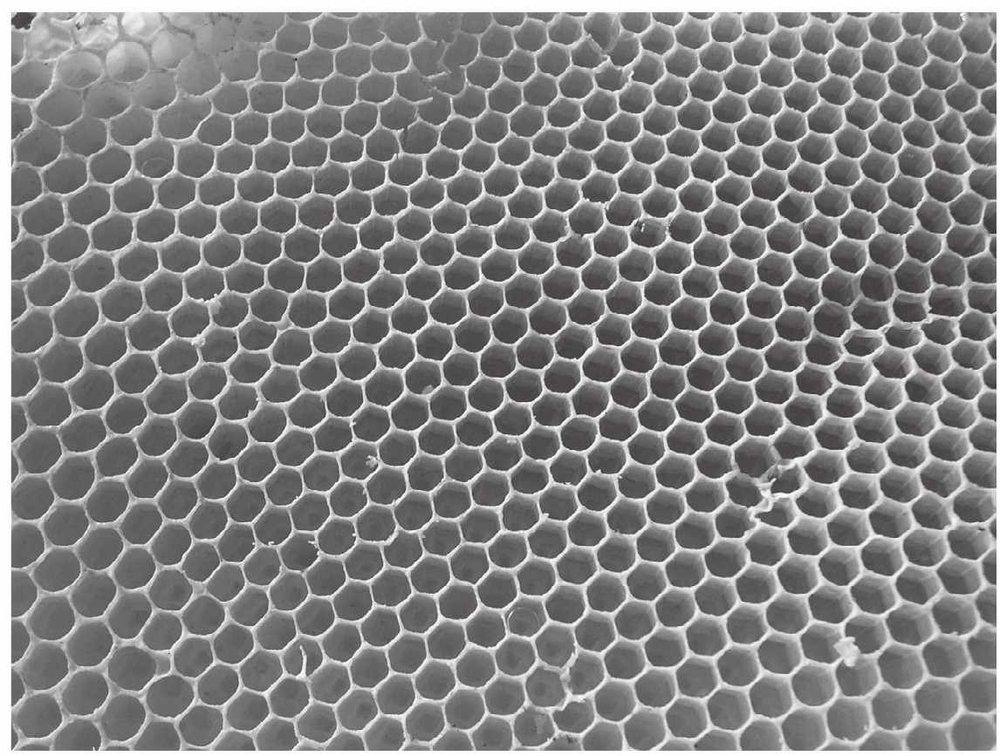
图6.1 蜂巢，大自然的六边形镶嵌
为什么蜂巢会有六边形的结构？帕普斯认为蜜蜂具有“天生的对称感”，达尔文则将蜂巢描述为“绝对完美地节省劳动和蜂蜡”的工程典范（彼得森，《蜂巢猜想》，p.60）。波兰博学大师布罗泽克（1585—1652）给出了一个数学原理：平面的六边形覆盖具有最小边界。换句话说，布罗泽克猜想用等面积的形状覆盖一块大的区域同时让边界最小的最优方式是用六边形结构。这个问题悬而未决多个世纪，1999年才由托马斯·黑尔斯证明。
顺提一下，黑尔斯用来证明蜂巢猜想的数学工具还被用于解决另一个长期悬而未决的问题——开普勒猜想。这个猜想也称为炮弹问题，问的是传统的堆橙子（或炮弹）的模式是不是最优（图6.2）。也就是说，用同等大小的球填充空间浪费体积最小的是所谓的紧密堆积，这种堆积由一层层的球组成，每层球的中心构成六边形网格。如果同等大小的球被随机扔进一个大箱子，实验结果表明球对箱子容积的填充率大约是65%，而六边形紧密堆积的填充率平均是
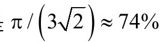
。这个游戏的名字叫高效堆积。这个问题吸引了高斯这样的数学大师的注意，他证明了一个特例。1900年，希尔伯特在巴黎的国际数学家大会上提出了10个他认为会深刻影响20世纪数学研究方向的问题。他的演讲的发表版包括了23个问题，开普勒猜想是希尔伯特第18个问题的一部分。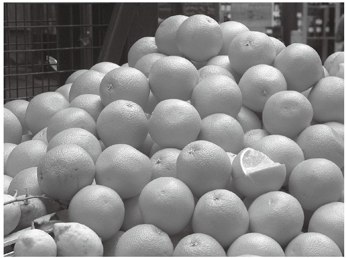
图6.2 堆放橙子的最佳方式是什么
类似于蜂巢猜想，开普勒猜想也曾搁置了多个世纪，直到被黑尔斯解决。1963年，匈牙利数学家拉兹洛·费耶·托斯证明这个问题可以简化为有限（但很大）数量的特例。他也意识到这样的问题可以用计算机解决，但这在当时还无法实现。黑尔斯在他的研究生萨缪尔·佛格森的帮助下，将这个问题变换为有150个变量的函数，他证明只要在5000种不同构造下这个函数的最小值都大于用紧密堆积得到的最小值，这个问题就解决了。这个方案需要巨量的计算，大约100000个线性规划问题，线性规划属于应用数学领域，是资源配置的基础。黑尔斯花了几年时间完成了这个项目以及开普勒猜想的证明。
同四色定理一样，这个方案也引起了争议。顶级期刊《数学年刊》的编辑要求要取得审稿小组的同意才能发表。审稿4年后，小组主席嘉柏·费耶·托斯（拉兹洛·费耶·托斯的儿子）说小组“99%肯定”这个证明是正确的，但是对打包票持保留意见，因为计算机的计算无法验证（Szpiro，“Does the Proof Stack Up?”pp.12-13）。虽然数学界基本已经接受了这个证明，黑尔斯还是在用自动证明检查软件寻求形式化证明。2014年这个项目宣布完成。
还有一个堆放问题是开尔文猜想，这是蜂巢猜想的三维版，要求排列等体积的三维胞体同时最小化胞体之间的面积。开尔文勋爵推测答案是用十二面体，有6个正方形面和8个六边形面的多面体。知道蜂巢和开普勒猜想的故事后，人们可能会认为开尔文猜想肯定也成立，但仅有美好的愿望是不够的。1993年，爱尔兰物理学家丹尼斯·维埃尔和他的学生罗伯特·菲兰用计算机模拟找到了能更高效填充三维空间的胞体，其中用到了两种不同的等体积多面体：有五边形面的不规则十二面体（四面对称）以及有两个六边形和12个五边形的十四面体，（反棱镜对称）（图6.3）。这种构造比开尔文结构的表面积少0.3%，但目前还不知道是不是最优。
维埃尔—菲兰结构在一些水晶结构中被发现。甲烷、丙烷和二氧化碳组成的气水合物在低温下就有这样的结构，水分子位于维埃尔—菲兰结构的节点上。另外，这种结构就像二维的蜂巢结构一样，被发现具有天然的强健性。维埃尔—菲兰结构启发了2008年北京奥运会国家游泳中心——著名的水立方——的设计。
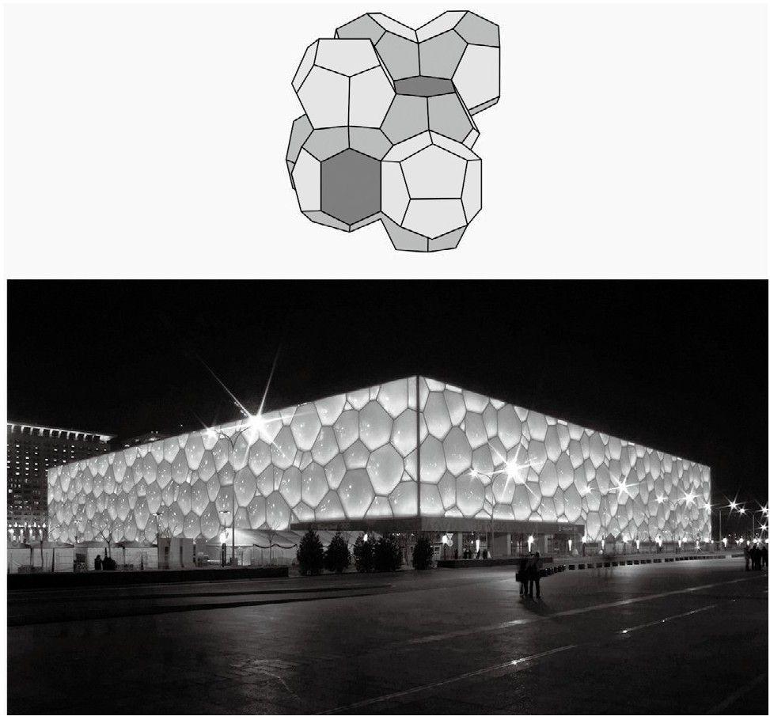
图6.3 维埃尔-菲兰结构和北京水立方游泳中心
朋友和陌生人
有6个人，如果两个人以前见过，就称为朋友，否则就称为陌生人。朋友和陌生人定理证明要么其中3人（相互）是朋友，要么其中3人（相互）是陌生人。
这个定理的证明简短而甜蜜。用6个点画一个图，每个点代表一个人，每对点都用一条边连接，如果两人是朋友，就用蓝边连接，否则就用红边连接。用图的语言描述这个定理，我们的目标是证明必然存在要么全蓝、要么全红的三角形。
选一个点，称为P，这个点有5条边连接，其中至少有3条边的颜色相同（鸽笼原理的一个简单例子）。将这3条边连接的点记为A、B和C，假设这3条边（PA、PB和PC）是红的，如果图中没有红三角形，则AB、BC和CA就都不是红色，但这就意味着它们都是蓝色，因此存在蓝三角形。如果边PA、PB和PC都是蓝色，类似地也可以证明A、B、C三点构造成红三角形，无论哪种情形，定理都得到了证明。
六度分离
如果在全世界随机选取两个人，连接两人的最短“朋友链”是怎样的呢？有一个观点认为任何人都可以通过最多6步到达任何人，这被称为六度分离。这个观点通过多个针对各种人群的研究变得广为人知，其中包括心理学家斯坦利·米尔格兰姆1967年的文章《小世界问题》。
虽然网络路径长度有限的思想与我们越来越强的交流手段和越来越小的世界很契合，具体的整数6还是高度地取决于太多不相关的因素。从数学上来说，已经证明，如果N表示随机网络中节点（可以认为是人）的总数，每个节点有K条连接（可以认为是朋友关系），则两个节点之间平均的路径长度是lnN/lnK。当然，要确定K很困难，因此下具体的结论没什么意义。假设全世界有70亿人，每人需要有43个朋友才能让平均路径长度为6，撇开社交媒体上脆弱的关系强度不说，6这个长度的可靠性也不高。
顺带说一句，第二次世界大战后计算机的发展激发了数学家发展新的自动化算法。艾兹格·迪科斯彻在20世纪50年代末提出的算法可以寻找网络中的最短路。这类算法是搜索最短出行路径的技术背后的引擎。
如果路径长度6的可靠性不高，为什么我们还把六度分离放在这一章呢？因为我们可以借此来探讨人群中与某人的联系。在第2章，我们遇到了20世纪的数学大师保罗·厄多斯。数学是厄多斯生活的全部，他通过与其他数学家合作换取经济资助和住所。厄多斯没有亲人，也没有家庭，是一位古怪的数学家。他的成就无论以什么标准来衡量，都是杰出的。如果一位数学家退休时发表了50篇论文，就可以认为是很多产了，很多人都超过了这个数量，厄多斯发表的论文超过1500篇，而且，他的网络让任何人都相形见绌，他有500多位合作者。
我们可以用图中的节点代表数学家，用边代表两位数学家至少合作过一篇论文。这种图称为合作图，奥克兰大学的杰瑞·格罗斯曼构建和研究了这种图。基于2004年以来的数据，这个图大约有40万个节点和290万条边。每篇论文的平均作者数量是1.51，每个作者的平均论文篇数是7.21。从时间上可以观察到有趣的趋势，例如文章作者数量和数学家平均的合作者数量的增长。1940年之前，发表的论文中合著的不到10%，50年后，大约有30%的论文是合著的。
考虑到厄多斯的多产，一个有趣的问题是人们与他的“距离”有多远，这启发了厄多斯数的提出。如果一个人与厄多斯有合著论文，我们就说他或她的厄多斯数为1，有504个人的厄多斯数为1。如果一个数学家的厄多斯数不为1，但是他和厄多斯数为1的某个人合著过论文，那么他的厄多斯数就为2。后面以此类推，这个数度量了某位作者在合作图上与厄多斯的距离。厄多斯数项目网站给出了给定的厄多斯数有多少人的数据（图6.1），这个表同样是基于2004年以来的数据。
表6.1给定的厄多斯数对应的人数
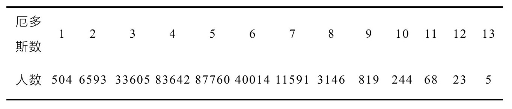
厄多斯数的中位值为5，平均值为4.65（作者本人很高兴地指出自己的厄多斯数是3）。图中关联到厄多斯的人有268000位。图中还有84000个孤立节点（只有独著论文的研究者）和50000个有合著但与厄多斯没有关联的作者，这些人的厄多斯数为无穷大。
球项链
让两个球S1和S2相切，让另一个球S3包围它们，在内部相切。我们一定可以构造6个球组成的项链，其中每个球都与旁边两个相邻球相切，并且还与S1、S2、S3相切（图6.4）。
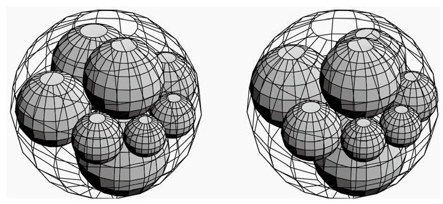
图6.4 球项链
事实上，一旦选定了项链的第一个球，就可以唯一确定剩下的球。6个球的球心共面，半径有如下关系：
这个神奇的结论被归功于索迪（1937），但同其他许多数学结果一样，其实早就被注意到了。17世纪到19世纪之间，日本流行一种名为算额的数学问题，通常是几何问题。这些问题形式多样，被刻在木板上，挂在寺庙里和神社中。球项链问题最初是在1822年由矢泽博厚挂在神奈川县的寒川神社。
杨辉三角形中的六边形
这一章说了这么多六边形，但还没有见过用非几何的方式呈现的六边形。在杨辉三角形内部选一个数，也就是不要选1。然后计算周围6个数的乘积。例如，从第4行中间任选一个3，得到1·2·3·6·4·1=144。或者在第5行任选一个4，得到3·1·1·5·10·6=900。这两个乘积有什么共性呢？它们都是完美平方数。事实上，在杨辉三角形内部任选一个数，周围6个数的乘积都是平方数。
证明很容易，而且是基于一个更精致的结构。将周围的6个数分成两组，每组由3个不相邻的格子组成。例如，在图6.5中标出了两组数字{6，10，35}和{5，20，21}，两组的乘积是相等的。为了证明这个结论具有普遍性，假设被包围的数是二项式系数
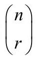
。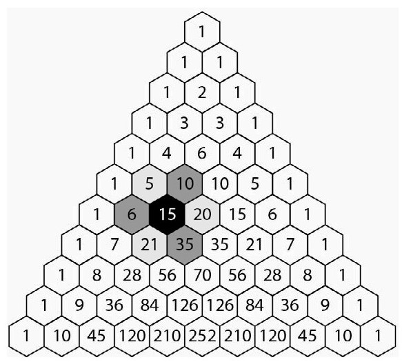
图6.5 浅灰色格子的乘积与深灰色格子的乘积相等
这样我们就可以比较周围两组二项式系数的乘积：
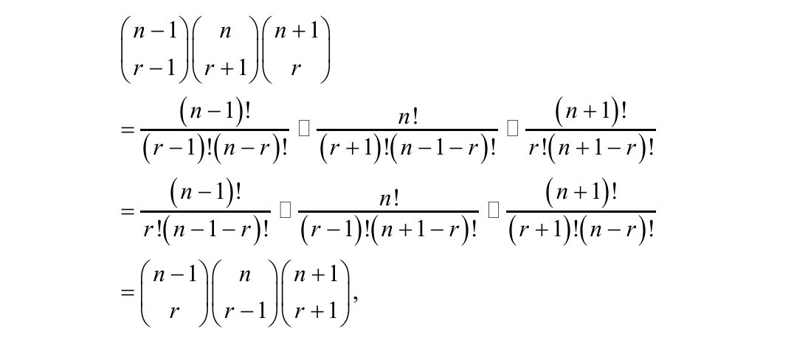
从而证明了周围6项的乘积是平方数。
六贯棋
用六边形镶嵌平面十分流行，甚至还出现了一种很有趣的游戏：六贯棋。这种游戏最初是丹麦数学家皮特·海恩在1942年发明的，后来约翰·纳什（1994年诺贝尔经济学奖得主，奥斯卡最佳影片《美丽心灵》讲述的就是他的故事）又独立重新发明了这个游戏。这个游戏以前被称为“多边形”、“约翰”或“纳什”，帕克兄弟玩具公司在1952年以“六贯棋”的名字发布了这款游戏，后来就一直沿用至今。
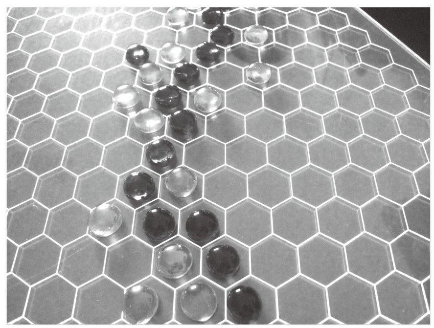
图6.6 六贯棋
六贯棋是两人游戏，用的是六边形格子镶嵌的菱形棋盘（图6.6）。棋盘有多种规格，但一般认为11×11是标准的。每位棋手占据棋盘相对的两边，两人在棋盘格里交替落子，目标是从你的一边到另一边连出一条路径。
这个游戏有一个有趣的地方是，平局是不可能的，必定有一个人赢。你可以试着用相同数量的两种棋子随机填满棋盘，看是不是总会形成一条路径。最好不要尝试为两位棋手都构造一条路径。无论你喜不喜欢，必然会有一条路径会在某个时刻出现。有趣的是，这种无平局特性可以用来证明二维情形的布劳威尔不动点定理（第1章）。
显然先下的棋手会有优势，因此有时候会用所谓的“分饼规则”（或互换规则），在先下的棋手下了第一步棋之后，后下的棋手有权选择与先下的棋手交换位置。
温特行列式
数学家喜欢看到在自己的工作中出现了让人吃惊或违反直觉的结果，这让他们在穿越定理世界时体验到一种美妙的感觉。在这本书中很少见到的矩阵分析就有一些美丽的宝石可以呈现。
有一种特殊的n×n矩阵称为循环行列式。假设矩阵的第1行已经给定。构造第2行的方法是将第1行的所有项右移一格，最后一项则绕回到第一个位置。第2行右移一格得到第3行，第3行右移一格又得到第4行，如此继续。如果执行正确，最后一行继续右移将得到第1行。因此矩阵由第1行唯一确定，我们可以用第1行的n个元素表示这个矩阵：Circ（a1，a2，……，an）。循环行列式在许多数学领域都有应用，包括密码学和图论，其中一个典型应用是信号处理中的离散傅里叶变换。
19世纪末，温特在费马大定理和二项式系数的循环行列式之间建立了关联：
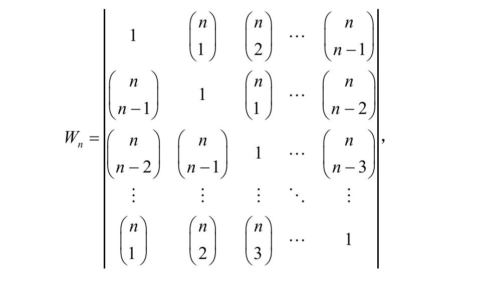
这其中的关联与Wn的因数有关，有时候会出现许多素因数，例如，如果n=p-1，其中p是奇数并且是素数，在这种条件下，pp−2是Wp−1的因数。
很显然，温特行列式的值增长得极快，因此数值计算任务艰巨。对n≤500的情形已经进行了彻底的分解。一个有趣的模式将温特行列式与这一章关联起来：当且仅当n是6的倍数时，Wn等于0。
6个几何长度
人们一般会认为，当一个场景中涉及的变量越多，则越不可能存在优雅的关系。然而，有3个优雅的几何定理涉及6个长度。有时候几乎需要借助第六感才能将这种关联变成现实。
塞瓦定理
在三角形内取任意一点，从这一点向3个顶点画直线，将每条边分成两部分，6个量a、b、c、d、e和f（图6.7）满足ace=bdf。
梅涅劳斯定理
与塞瓦定理类似，不过是从三角形的一条边往另一边的延长线作一条直线，等式是（a+b）ce=bdf。
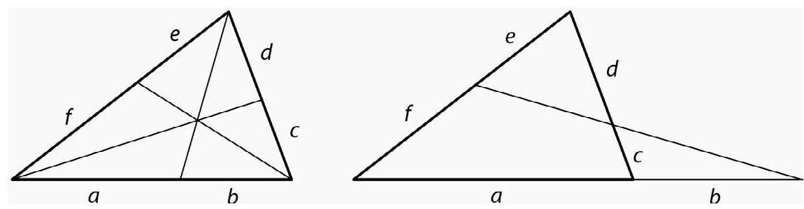
图6.7 塞瓦定理和梅涅劳斯定理
春木博定理
除了3个三角形，春木博还考虑了3个圆的交点之间的距离（图6.8）。他发现了等式ace=bdf。
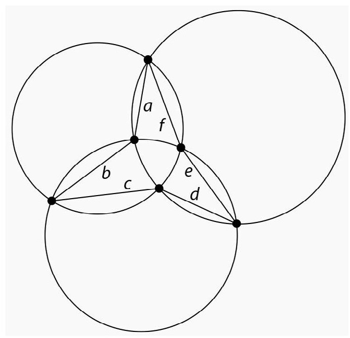
图6.8 春木博定理